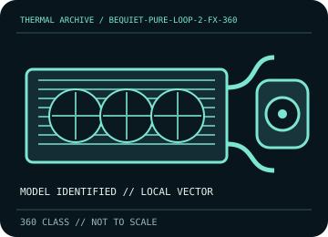

[ INDIVIDUAL COMPONENT // COOLING ]
be quiet! Pure Loop 2 FX 360
Refillable 360 mm AIO with three Light Wings PWM high-speed fans and integrated ARGB hub.

IDENTIFICATION: Match the complete model, regional SKU, revision, and supplied socket kit. Similar names and radiator classes do not guarantee identical brackets, dimensions, leads, or warranty terms.
Manufacturer specifications and compatibility
| Exact model / listing | be quiet! Pure Loop 2 FX 360 |
|---|---|
| Radiator dimensions and thickness | 397 × 120 × 27 mm aluminum, 360 mm class. Allow additional clearance for the supplied 25 mm fan stack, fittings, and tube bend. |
| Fans | 3 × 120 mm Light Wings PWM high-speed fans; up to 2,500 rpm. 4-pin PWM, with separate 5 V 3-pin ARGB leads. |
| Pump / block | PWM pump, 4,000–5,500 rpm; use the dedicated pump lead and manufacturer-directed header. |
| Supported CPU sockets | Intel LGA 115x / 1200 / 1700 / 2011(-3) / 2066; AMD AM4 / AM5. Confirm supplied bracket and CPU generation. |
| Tube length / construction | 400 mm sleeved tubing. |
| Power, fan, lighting, and display connectors | 4-pin PWM fan and pump connections; 5 V 3-pin ARGB; supplied ARGB/PWM hub. Never connect a 5 V ARGB lead to a 12 V RGB header. |
| Warranty | Manufacturer lists a 3-year warranty; regional terms, proof of purchase, and the exact model code govern. |
| Case compatibility | Case must support a 360 mm radiator and provide at least 52 mm for radiator plus fans, plus fittings and bend clearance. Check top/front tray length and RAM/VRM obstruction. |
| Motherboard compatibility | Socket/bracket compatibility is model-specific. Reserve accessible PWM headers and a 5 V ARGB header or use the included hub; verify the motherboard manual and header current limits. |
Warranty, maintenance, and safe installation
This design has a refill port and includes coolant. Refill only as directed in the model manual with the maker-specified fluid; do not mix coolants or open the pump/block. Disconnect power for cleaning, hold fans still, inspect the loop for seepage, and stop use if leakage or pump failure is suspected.
- Install only with the model-specific manual and included retention hardware. Do not operate a pump dry or allow tubes to kink or rub against sharp edges.
- After installation, verify pump and fan tachometer/control operation and monitor CPU temperature under a repeatable load before normal service.
- Warranty statements are a reference, not a substitute for current regional terms; preserve the serial number and purchase record and contact the manufacturer for service.
Manufacturer sources
- be quiet! — Pure Loop 2 FX 360 product specificationsRadiator, included fans, pump, refill feature, socket and warranty information.
- be quiet! — Pure Loop 2 FX manual downloadManufacturer installation and maintenance instructions; confirm that the download applies to the exact 360 mm SKU.
Static catalog reference only. Verify the precise SKU, manual revision, and current local warranty documentation before installation.